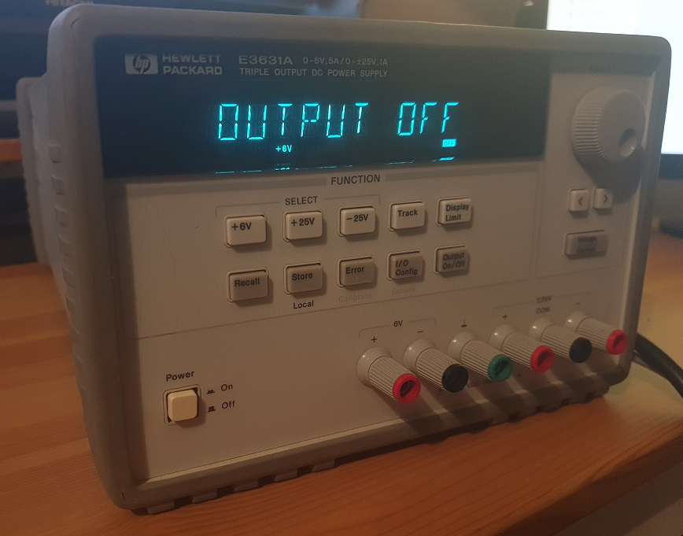

The Keysight/Agilent/HP E3631A power supply, shown in Figure 1, has three outputs: +6V at 5A, and +-25V at 1A. It is perfectly usable as a standalone benchtop power supply, using the front-panel buttons and rotary encoder to control the outputs. However, it may also be controlled by a remote computer - either through a General Purpose Interface Bus (GPIB) or through RS232. This tutorial will describe how to control the E3631A through a RS232 connection using the Python programming language. In the future, this tutorial may be expanded to include GPIB and/or other languages.
Figure 1: Front view of my specific HP E3631A. This tutorial is compatible with all brands of E3631A at time of writing.
To facilitate the easy development of scripts, I have created the e3631a.py module, which may be downloaded from [2]. This module contains two simple functions - sendscpi and readscpi. These function as follows:
writescpi(port,command) - port: takes the name of the serial port, in string format. command: takes the SCPI command (see instrument user manual) to be sent to the instrument, in string format.
readscpi(port) - port: takes the name of the serial port, in string format.
The Python script e3631ameasuretest.py [3] provides a simple example of the module in use.
It begins by initialising the serial port to which the E3631A is connected. The instrument's ID is requested and should be printed on the console. Next the instrument is put into remote mode through the use of the SYST:REM command. This is crucial, otherwise you will not be able to fully interface with the instrument through your serial connection.
At this stage, the script is ready to be used in any way the author sees fit. In this instance, the instrument sweeps through a number of voltages on the positive 25 Volt port, measuring the current and printing the results to the console. The output for this specific script is:
IDN of ps1: HEWLETT-PACKARD,E3631A,0,1.6-5.0-1.0 Current at 0V: -1.14548900E-03 Current at 1V: -1.12009500E-03 Current at 2V: -1.11556000E-03 Current at 3V: -1.09470000E-03 Current at 4V: -1.06023500E-03 Current at 5V: -1.04391000E-03
Note that general commands, such as to measure current (MEAS:CURR?), apply to the port which was last selected through the INST command. In order to select the +25V port, INST P25V was sent (line 49). In such a circumstance where another port needed to be controlled, one would have to specify that port to command it, before again sending INST P25V to regain control of the +25V port.
Finally, the serial port is closed (line 64). It is important to do this, otherwise the port may not respond when used by other applications. If your Python script stops during execution (say, as the result of an error), then the port may still be open. In this case you will need to close and restart your IDE to close the serial port.
It is all well and good to receive measurements from automated setup as above, but it is more useful to write the measurements to a file for later processing (in equations, into plots, etc). e3631asavetofile.py [4] shows one way to do this. The serial port is opened, ID retrieved, and the instrument put into remote mode as before. This time, an array is created to store the IDN, date and time of the measurement start and stop, and document the voltage and current. Csvwriter is then used to write this array to a .csv file. The output from this script is given in [5].
A short, simple module has been presented to facilitate the easy scripting of automated measurements using the E3631A power supply. Furthermore, a means of storing measurements in a convenient format has been shown. In the future, GPIB control using Python will also be investigated.
v1.0: 12/02/22